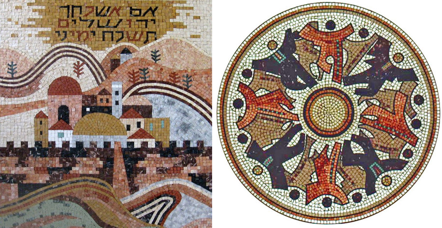
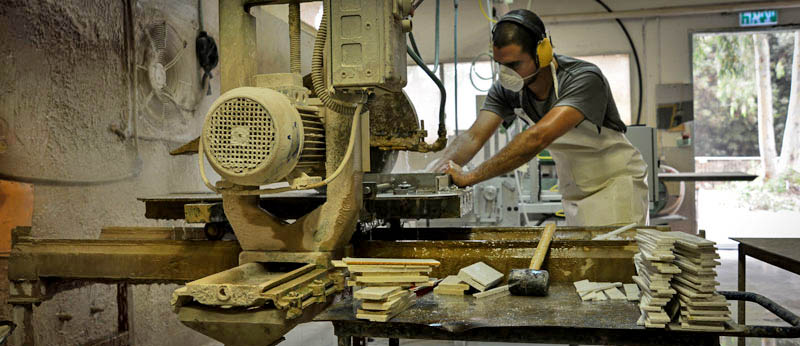
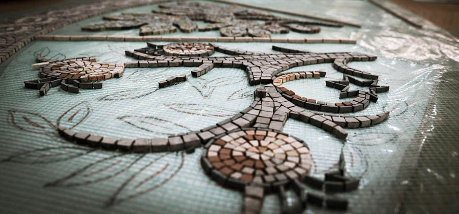
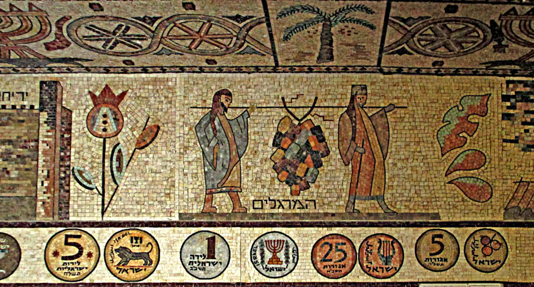
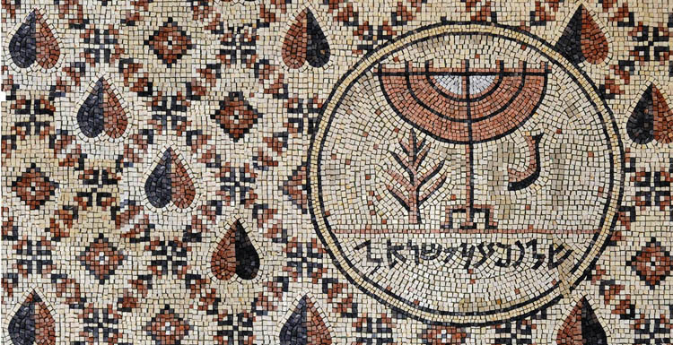
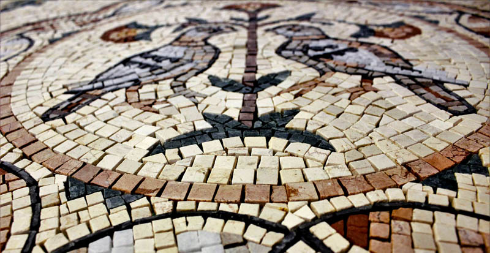
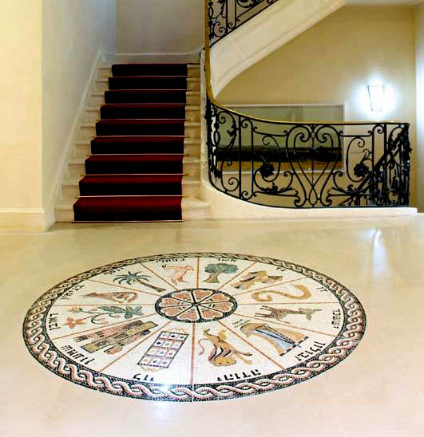
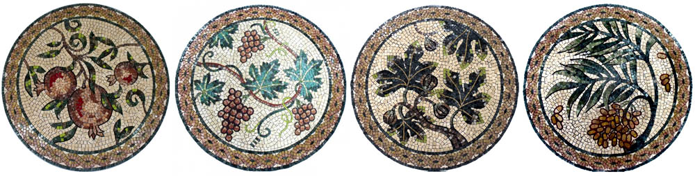

The Rebirth of the State of Israel and Ancient Synagogue Mosaics
The experience of this mosaic workshop is interesting above all because its very appearance was directly connected with the ancient history of my people.

Kibbutz Eilon lies in the very heart of Western Galilee. It is always very green and beautiful here, and not too hot even on the most unbearably sultry days of the Israeli summer. And this is where hiking trails begin through the most picturesque and interesting places of Galilee.
This kibbutz was founded in 1939 as part of the strategy of settling (wicked tongues call it seizing) Eretz Israel. It was built by the "tower and stockade" method: a wooden watchtower was put up overnight, and the area next to it was surrounded by a protective fence so that it could be defended. The kibbutz was founded by members of a "Hashomer Hatzair" group from Mandatory Palestine and immigrants from Poland.
In time, to provide work and employment for the kibbutz veterans, it was decided to carry out the idea of setting up a small mosaic workshop. In the sixties machines for sawing and working stone were bought, and... The beginning was not very successful, but gradually the kibbutz members found a way to create mosaics. The founders of Eilon Mosaics were Motzik and Kalman. Then they were joined by Meirka (Meir) Davidson (he was one of the founders and fighters of the "Palmach").


The factory hired a small staff to promote and advertise Eilon Mosaics. They met the country's leading architects, offering them designs of mosaic compositions for interiors and façades of buildings, and also for landscaping. At first the mosaicists of Eilon Mosaics specialised exclusively in replicas (copies) of the mosaics of ancient synagogues found in archaeological excavations in Israel. Once a certain professor from Jerusalem took an interest and bought one of the mosaic copies. For the factory workers this was a sign that they were on the right road, and they went on making copies of the mosaics of other ancient synagogues of Israel.

"In the fifties and sixties archaeology was very popular, and thousands of ordinary Israelis from the settlements attended events and exhibitions of Israeli archaeology in order to see the connection with the past. Knowing that Jews had lived here in ancient times, something made here that matched the colours of the local landscape stirred the public. When the Israeli consumer saw something made here that suited the character of the place, that did not look bourgeois (there were many socialists among the settlers in Eretz Israel), and was not some old-fashioned suit or closed shoe borrowed from Europe, it gave a sense of newness that was in harmony with the sense of renewal in Zionism."
This wave of interest is explained by the fact that truly vigorous archaeological work began only after the proclamation of Israel's independence in 1948. Before that, in the twenties and thirties, it was mainly the French and the English who dug here. After the state was established, a wide field of activity opened up for Israeli scholars, and the bulk of the specialists were prehistorians and biblical scholars. They were joined by classicists (Greece, Rome and Byzantium). One must also bear in mind here such a phenomenon as "political" archaeology, which had a strong ideological significance.


So the wave of Israelis' interest in everything connected with history, culture and the continuity of generations contributed a great deal to the success of the enterprise. In 1960 Zion Gabay of Akko, one of the elders of the Or HaTorah (Light of the Torah) synagogue, noticed the skill of the artists of Eilon Mosaics and placed with them a "long-playing" commission to decorate the synagogue (the work continues to this day) of Tunisian Jews who wanted to "restore" the synagogue of their childhood, El Ghriba on Djerba in Tunisia. (This is the oldest synagogue in North Africa: it is more than two thousand years old. It keeps the scrolls of one of the oldest copies of the Torah in the world.)

From then on the workshop began to receive invitations to varied and interesting work. A showroom of the factory's mosaic works was set up in the kibbutz and gradually became a centre of attraction for tourists from Israel and abroad. In this way the factory began to "enlarge the place of its tent" and became well known.
At the end of the sixties the Eilon artists received a state commission. It was a unique and exciting project for a huge mosaic. Today it adorns the floor of the main hall of the President's Residence in Jerusalem. Then came commissions to decorate Israel's diplomatic missions abroad with mosaics, mosaic panels for synagogues throughout the country and beyond it, and for the interiors of hotels and private homes.
To obtain the stones used in the mosaics, several Eilon workers set out by lorry every six months. They drove along a well-known route for gathering stones. All the stones are local, from Eretz Israel: granite from the mountains of Eilat, stone blocks from Mitzpe Ramon, green stone from Timna, black basalt from the Golan Heights. It was a special time of travelling through the Land of the Fathers. It was not simply the procurement of raw material for production: every stone carried in itself the memory of history and had witnessed our patriarchs wandering through the land of Canaan, and the kings and prophets of Israel. And of course, both for the artists and for those who commissioned the mosaic panels, it mattered a great deal that the mosaic itself, thousands of pieces of stone, is flesh of the flesh of the land of Israel.


For me the experience of the kibbutz mosaic workshop is interesting above all because its very appearance was directly connected with the ancient history of my people, with the need and interest of new and newer waves of aliyah to learn and understand their roots. The new immigrants, often cut off from Jewishness, and the whole country searched for their roots, first, in the Bible (not for nothing are we called the people of the Book), and second, in everything that Eretz Israel, the land of Israel, had kept and carried through the millennia.
The article uses material from eilonmosaics.
 Interview with Jacob Damkani about the Film "A New Spirit". On Messianic Jews
Interview with Jacob Damkani about the Film "A New Spirit". On Messianic Jews The Sukkah and the Wild Olive. Building a Sukkah as Written
The Sukkah and the Wild Olive. Building a Sukkah as Written A Hasid Who Accepted Messiah Yeshua, on the Film "A New Spirit"
A Hasid Who Accepted Messiah Yeshua, on the Film "A New Spirit"